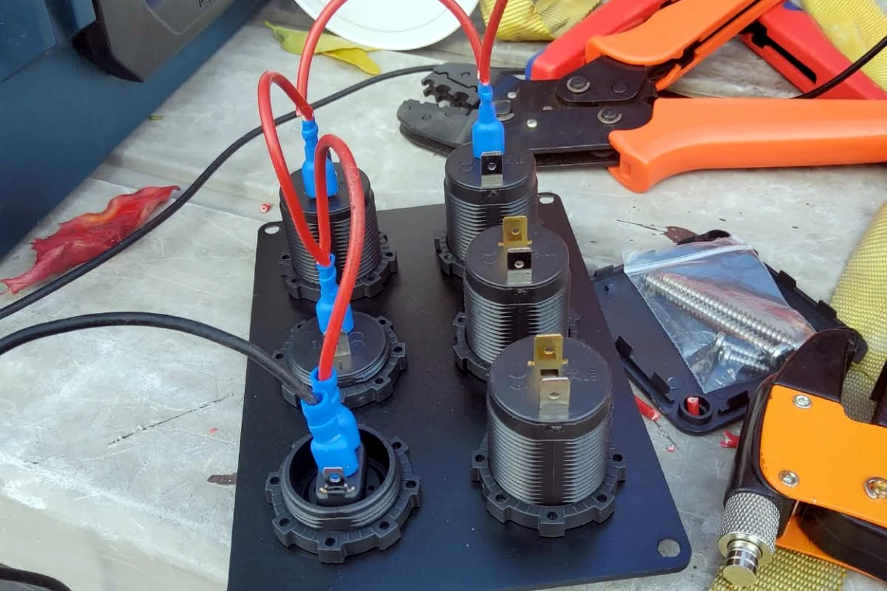

Zusätzliche Batterie unter dem Sitz — endlich Strom zum Laden

Telefon laden, Licht benutzen, Kamera-Akkus versorgen — unterwegs merkt man sehr schnell, wie abhängig der Alltag von Strom ist. Am Anfang musste ich ständig überlegen, was noch geladen werden kann, ohne dass am nächsten Morgen die Starterbatterie schlappmacht. Die Lösung war eine zusätzliche Batterie unter dem Sitz.
Starten und Wohnen voneinander trennen
Die Idee einer Aufbaubatterie ist einfach: Die Starterbatterie bleibt in erster Linie fürs Fahrzeug zuständig. Die zusätzliche Batterie versorgt die Verbraucher im Wohnbereich. Damit konnte ich laden und Licht nutzen, ohne bei jedem Prozent Akku Angst um den nächsten Motorstart zu haben.
Der Platz unter dem Sitz war dafür praktisch, weil die Batterie geschützt und relativ unauffällig untergebracht werden konnte. Ob dieser Einbauort für ein bestimmtes Batteriemodell geeignet ist, hängt aber von Bauart, Befestigung, Belüftung und Herstellervorgaben ab. „Passt hinein“ reicht bei einer Batterie nicht als Prüfung.
Endlich Anschlüsse dort, wo ich sie brauche
Auf dem Foto seht ihr die neuen 12-Volt- beziehungsweise Ladeanschlüsse während des Verdrahtens. Das ist kein spektakuläres Hochglanzbild, aber genau so sieht der Teil aus, der später den Alltag verändert. Kabel vorbereiten, Kontakte sauber vercrimpen, jeden Anschluss eindeutig zuordnen — viele kleine Schritte für etwas, das anschließend selbstverständlich wirkt.
Was für mich wichtiger war als möglichst viel Leistung
- Die Starterbatterie darf durch meine Wohnverbraucher nicht unbemerkt entladen werden.
- Jeder Stromkreis braucht eine passende Absicherung nahe an der Energiequelle.
- Kabelquerschnitt, Sicherung und Verbraucher müssen zusammenpassen.
- Leitungen müssen gegen Scheuern, Hitze und lose Bewegung geschützt sein.
- Die Batterie muss stabil befestigt und für den gewählten Einbauort geeignet sein.
Der kleine Luxus, jederzeit laden zu können
Nach dem Einbau war Strom plötzlich kein tägliches Rechenthema mehr. Ich konnte meine Geräte anschließen, Licht nutzen und musste nicht für jede Ladung den Motor laufen lassen oder eine Steckdose suchen. Für manche klingt das banal. Nach Wochen im Camper fühlt es sich wie echter Luxus an.
Die Batterie unter dem Sitz sieht man im Alltag kaum. Aber genau das sind oft die besten Umbauten: Sie stehen nicht im Weg, machen keine Show und lösen jeden Tag ein echtes Problem.
Bis bald und immer gute Fahrt,
eure Tussy 💛